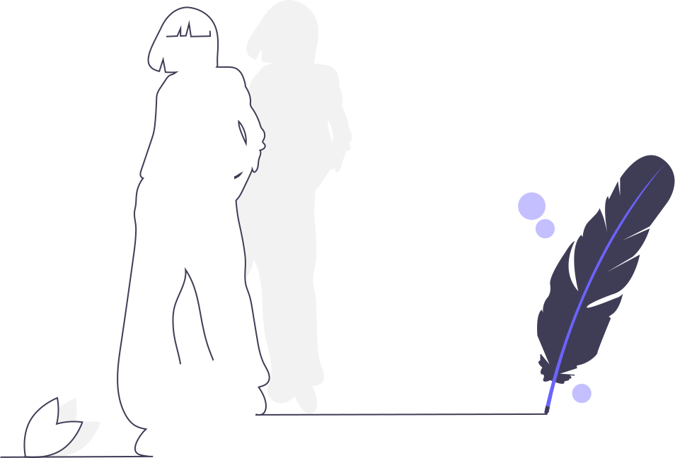

MISA-MD
A massively parallel molecular dynamics simulation program

Massively Parallel
Expanded to 4x10^12 and 3x10^13 atoms on sunway taihulight supercomputer.

Cascade Collision Simulation
Professional cascade collision simulation for metal material.

Open Source
It is open sourced, free to use and free to improve!

Typical Supercomputers supporting
We have developed accelerating code for sunway and tianhe supercomputer, read building document for more detaild.
Learn How
Read our implementation document for more technical details.

Contributing
Read our contributing guide to learn about our development process, how to propose bugfixes and improvements, and how to build and test your changes to MISA-MD.

Who is Using This?
MISA-MD is used by all these people